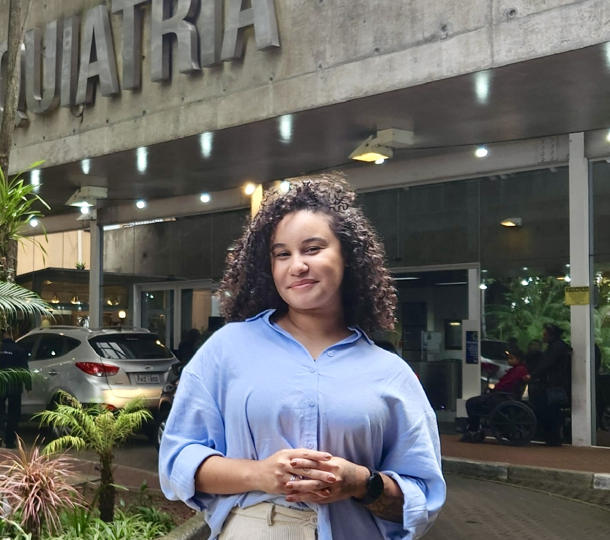

TOC
Pensamentos intrusivos e comportamentos repetitivos ritualizados que ocupam tempo, causam sofrimento e prejudicam a vida cotidiana.
Psicoterapia online especializada para TOC, transtornos relacionados e ansiedade em adultos, com abordagem cognitivo-comportamental.
Saiba mais e agende pelo WhatsApp
Experiência consolidadada com formação em pesquisa pelo Instituto de Psiquiatria da Universidade de São Paulo (IPq-USP)
Pensamentos intrusivos e comportamentos repetitivos ritualizados que ocupam tempo, causam sofrimento e prejudicam a vida cotidiana.
Tricotilomania, transtorno de escoriação, transtorno dismórfico corporal e transtorno de acumulação.
Transtorno de ansiedade generalizada, transtorno do pânico, fobias e ansiedade social.
Depressão, transtornos alimentares e transtornos do controle do impulso (compras compulsivas, jogo patológico e transtorno explosivo intermitente).
Cada processo terapêutico é único, mas alguns passos costumam fazer parte de todos os acompanhamentos:
O primeiro passo é entrar em contato. Ficarei à disposição para esclarecer todas as suas dúvidas sobre o atendimento, valores, horários e formas de pagamento. Também agendaremos a primeira consulta.
No primeiro encontro, o objetivo é conhecer você para além dos sintomas. Conversaremos sobre suas dificuldades, seus objetivos, sua história e os aspectos da sua vida que ajudam a compreender o momento que está vivendo.
Com base nessa avaliação inicial, construiremos um plano terapêutico individualizado. Definiremos prioridades, objetivos e estratégias que façam sentido para a sua realidade, utilizando recursos da Terapia Cognitivo-Comportamental.
Ao longo da terapia, revisaremos continuamente o progresso, as dificuldades e os objetivos do tratamento. O acompanhamento é um processo flexível, adaptado às mudanças e necessidades que surgem durante o caminho.
Não existe tempo determinado para a psicoterapia. Cada pessoa tem suas necessidades e ritmo de mudança.
Sou psicóloga (06/167415), com especialização em Neurociência, Comportamento e Psicopatologia. Além disso, sou pesquisadora e doutoranda pelo Instituto de Psiquiatria da Universidade de São Paulo (IPq-USP). Minha atuação integra a clínica e a pesquisa, especialmente no estudo do TOC, transtornos relacionados, transtornos de ansiedade e determinantes sociais da saúde.
Minha experiência me ensinou a importância de compreender o sofrimento com profundidade e senso crítico, oferecendo um atendimento técnico, ético e individualizado. Por isso acredito na importância de olhar para além dos sintomas, considerando a história, os valores, os aspectos sociais e o contexto de vida de cada paciente.
Aprendi a falar cedo e sempre encontrei nas palavras uma forma de compreender o mundo e as pessoas. Quando chegou o momento de escolher uma profissão, a Psicologia já fazia parte da minha história.
Durante a graduação, minha curiosidade me levou ao caminho da pesquisa. Em 2018, realizei minha primeira iniciação científica, investigando representações do feminino.
No mesmo período, ingressei como voluntária de pesquisa no IPq-USP, onde tive meu primeiro contato com a pesquisa clínica em saúde mental.
Ainda em 2018, comecei a atuar como assistente de pesquisa em um projeto internacional estudando fatores genéticos em famílias com TOC.
Essa experiência consolidou meu interesse pela pesquisa e possibilitou o desenvolvimento da minha segunda iniciação científica, investigando a qualidade de vida de famílias com TOC, essa financiada pela FAPESP, a principal agência de fomento à pesquisa no Brasil.
Em 2020, concluí minha graduação em Psicologia pela Universidade Paulista.
Na sequência, realizei uma pós-graduação em Neurociência, Comportamento e Psicopatologia pela Pontifícia Universidade Católica do Paraná, com o intuito de aprofundar meus conhecimentos sobre o papel do comportamento no desenvolvimento dos transtornos mentais e suas bases neurobiológicas.
Mantive minha atuação em projetos nacionais e internacionais sobre TOC e transtornos relacionados, atuando como coordenadora clínica e membro do Grupo de Trabalho Brasileiro de Transtornos do Espectro Obsessivo-Compulsivo (GTTOC/gen_TOC, @somosgentoc nas redes sociais).
Essa trajetória tem resultado em publicações científicas, apresentações em congressos e colaboração com pesquisadores de diferentes países, com alto impacto no campo de estudo.
Em 2024, fui aprovada para o Doutorado Direto em Psiquiatria pela USP, investigando os determinantes sociais da saúde em pessoas com TOC e transtornos relacionados no Brasil e na América Latina, também financiado pela FAPESP.
Estudar esse tema também foi uma forma de compreender melhor a minha própria história e reforçou uma convicção que levo da vida para a clínica: cada pessoa precisa ser compreendida dentro do contexto em que vive, e não apenas pelos sintomas que apresenta.
Psicoterapia com abordagem cognitivo-comportamental, padrão ouro para o tratamento de transtornos psiquiátricos.
O planejamento terapêutico é único, considerando suas necessidades, objetivos e momento de vida.
Os sintomas não surgem isoladamente. Família, relações, trabalho, cultura e condições de vida podem influenciar e precisam ser considerados.
A terapia é um espaço de escuta, acolhimento e construção entre profissional e paciente, respeitando suas vivências.
Informação também faz parte do cuidado. Selecione um tema para ter mais informações.
Saiba mais sobre o TOC, como identificar seus sintomas e suas principais formas de tratamento.
Saiba mais sobre a tricotilomania, como identificar seus sintomas e suas principais formas de tratamento.
Saiba mais sobre o transtorno de escoriação, como identificar seus sintomas e suas principais formas de tratamento.
Saiba mais sobre o transtorno dismórfico corporal, como identificar seus sintomas e suas principais formas de tratamento.
Saiba mais sobre o transtorno de acumulação, como identificar seus sintomas e suas principais formas de tratamento.
Saiba mais sobre transtorno de ansiedade generalizada, transtorno de pânico, fobias e transtorno de ansiedade social, como identificar seus sintomas e suas principais formas de tratamento.
Saiba mais sobre a depressão, como identificar seus sintomas e suas principais formas de tratamento.
Saiba mais sobre compras compulsivas, jogo patológico e transtorno explosivo intermitente, como identificar seus sintomas e suas principais formas de tratamento.
Saiba mais sobre bulimia, anorexia e transtorno de compulsão alimentar, como identificar seus sintomas e suas principais formas de tratamento.
Se você deseja iniciar a psicoterapia ou sanar alguma dúvida, entre em contato. Será um prazer conversar com você!
Conversar pelo WhatsApp Ver currículo lattes